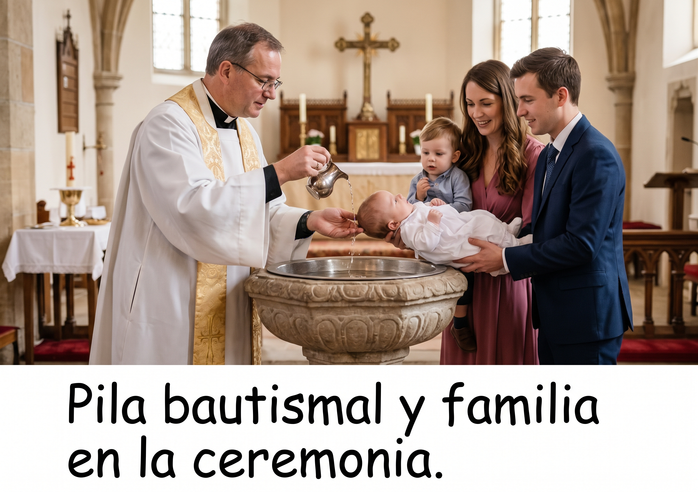
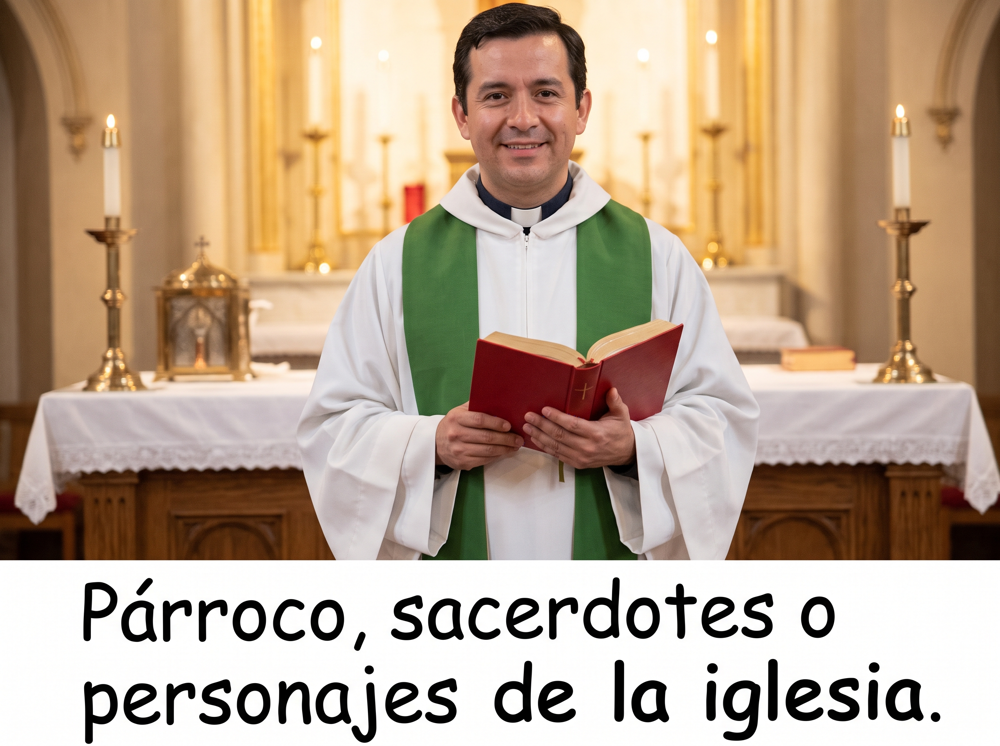
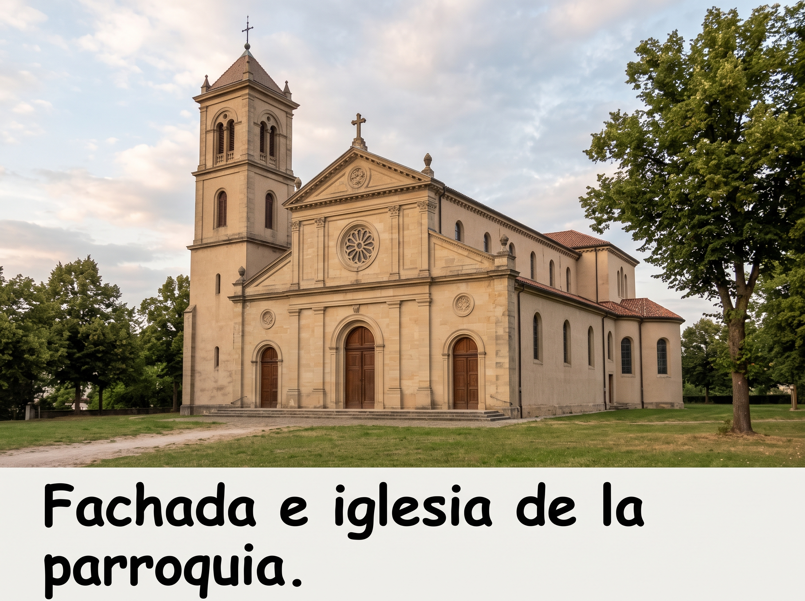
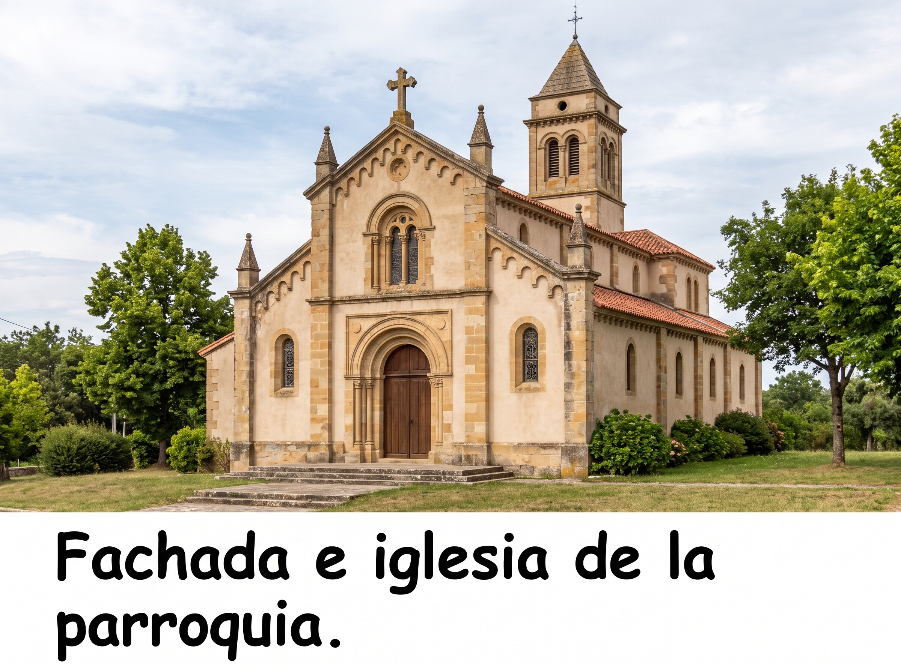

Sacramento del Bautismo

Emblema Parroquial

Personajes Parroquiales

Sede Eclastica

Consulta de Certificado Canonico

Registro Canonico de Matrimonio

Galeria e imagineria eclesiastica para el sistema parroquial



